Simplified model for altitude control of a drone
The following report aims to give a better understanding of the steps taken to linearize the system and model a proportional-derivative controller.
Contents
- Lab 2
- Question 2.5
- Question 2.6 - analyzing the results obtained
- Lab 3
- Question 3.4
- Question 3.5
- Question 3.7
- Question 3.8 - searching the value for K to get double pole in -2.01
- Question 3.8 - running the simulation and plotting the step response
- Question 3.9 - effect of a varying z for constant K
- Question 3.9 - effect of a varying K for constant z
Initializing the workspace
close all
clear
clc
Lab 2
% Parameters for running the simulation
finaltime = 2;
StepSize = 0.01;
Question 2.5
Across the whole program we start the changes from the equilibrium 1 second after the beginning of the simulation so as to facilitate visualization.
% Given parameters initial_step = 1; % s M = 1; % kg G = 9.8; % m/s^2 Kt = 3.575e-5; % N/(rad/s)^2 Z0 = 2; % m % Calulating the variables for equilibrium omega_0 = sqrt(G*M/Kt); % rad/s u_0 = omega_0; % Increasing the input by 100, 1000 and 5000 rpm and calculting the angular % velocity in rpm d_u_rpm = [100,1000,5000]; u_rpm = u_0/(2*pi/60) + d_u_rpm; u = u_rpm.*(2*pi/60); % rad/s delta_u = u-u_0; % Intializing the figure counter fig_count = 1;
Running the simulation with the inputs calculated above
% The for loop cycles through all the step sizes specified in the StepSizes % vector. for i = 1:length(u) simout_tot = sim('total_lab2','StopTime',num2str(finaltime),'FixedStep',num2str(StepSize)); % Plotting the angular velocity of the blades - it mimics almost perfectely the input U figure(fig_count) fig_count = fig_count + 1; plot(simout_tot.get('omega_lin').time, simout_tot.get('omega_lin').signals.values/2/pi*60); hold on plot(simout_tot.get('omega').time, simout_tot.get('omega').signals.values/2/pi*60, '--'); xlabel('time (s)') ylabel('w (rpm)') title(strcat("Angular velocity ", "du = ", num2str(d_u_rpm(i)), " rpm")) legend('lin','non lin','Location','southwest'); % Plotting the altitude of the drone figure(fig_count) fig_count = fig_count + 1; plot(simout_tot.get('z_lin').time, simout_tot.get('z_lin').signals.values); hold on plot(simout_tot.get('z').time, simout_tot.get('z').signals.values); xlabel('time (s)') ylabel('z (m)') title(strcat("Altitude ", "du = ", num2str(d_u_rpm(i)), " rpm")) legend('lin','non lin','Location','southwest'); % Plotting the vertical speed of the drone figure(fig_count) fig_count = fig_count + 1; plot(simout_tot.get('omega_lin').time, simout_tot.get('z_pt_lin').signals.values); hold on plot(simout_tot.get('omega').time, simout_tot.get('z_pt').signals.values); xlabel('time (s)') ylabel('Velocidade (m/s)') title(strcat("Velocity ", "du = ", num2str(d_u_rpm(i)), " rpm")) legend('lin','non lin','Location','southwest'); % Plotting the vertical acceleration of the drone. Because the % acceleration is directely proportional to the angular velocity of the % blades, this graph is very similar to that of the angular velocity. figure(fig_count) fig_count = fig_count + 1; plot(simout_tot.get('omega_lin').time, simout_tot.get('z_2pt_lin').signals.values); hold on plot(simout_tot.get('omega').time, simout_tot.get('z_2pt').signals.values); xlabel('time (s)') ylabel('Aceleração (m/s^2)') title(strcat("Acceleration ", "du = ", num2str(d_u_rpm(i)), " rpm")) legend('lin','non lin','Location','southwest'); end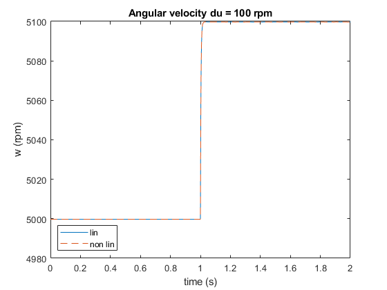 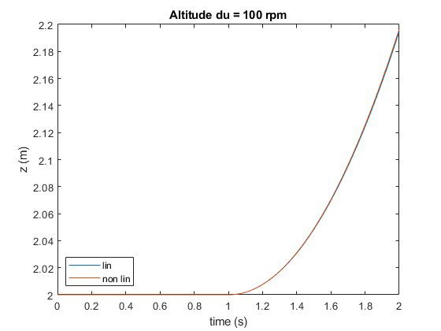 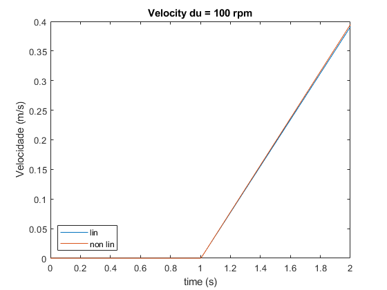 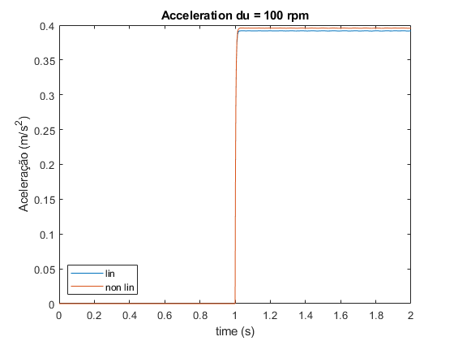 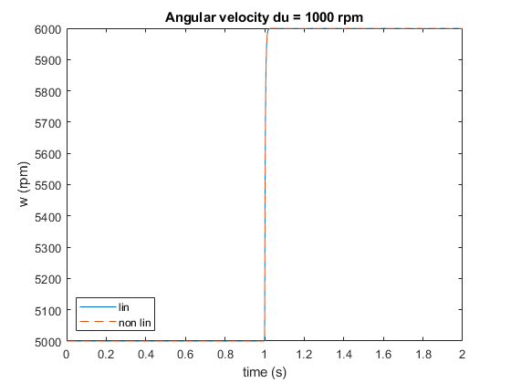 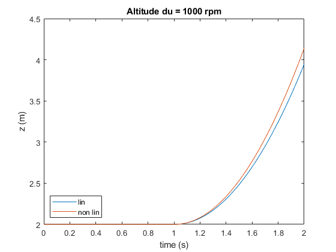 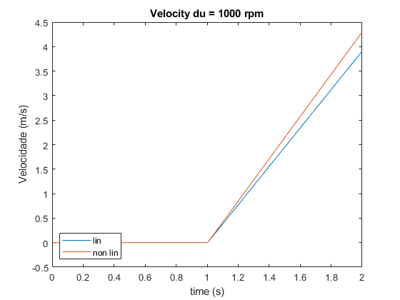 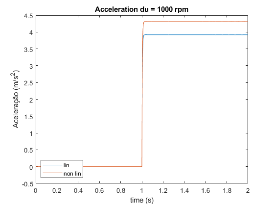 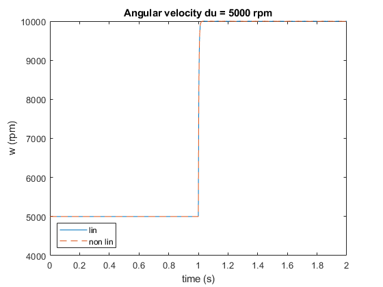 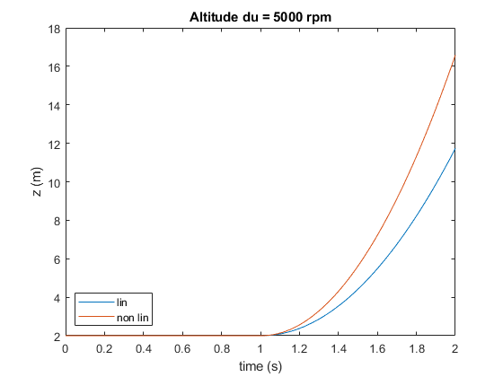 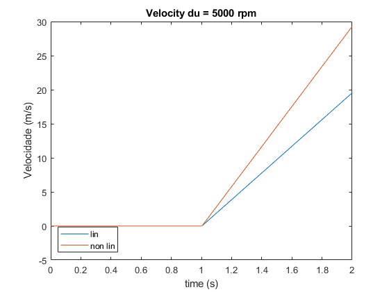 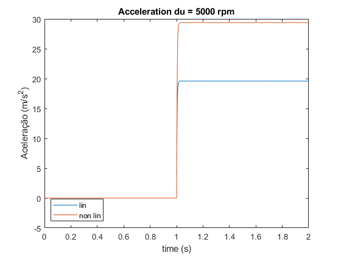
Question 2.6 - analyzing the results obtained
From observation of the previously shown altitude plots, it can be concluded that for lower angular velocity increments, the linear model is a good approximation, with increasingly bigger differences existing as the velocity increment also gets bigger. This makes sense because the linear model works around a certain equilibrium point (in this case, 5000 rpm) which means that for increments that change the value of the angular velocity more agressively (higher increments) the difference from the non-linear (real) model increases.
Specifically, the plots for the 100 rpm increment are very similar, whereas the plots refering to the 1000 rpm increment already show noticeable differences in altitude, velocity and acceleration values. The least accurate plots are the ones that show the system's behavior for the 5000 rpm increment, with even bigger differences between the linear and non-linear models.
Lab 3
Setting the system parameters
dZr = 1; % m
finaltime = 7;
Question 3.4
% Defining the transfer Function for the proportional controller s = tf('s'); g_prop = 1/(s^2*(s+300));
For K > 0, the root locus is
figure(fig_count)
fig_count = fig_count + 1;
rlocus(g_prop);
title('Root locus for K > 0, proportional loop')
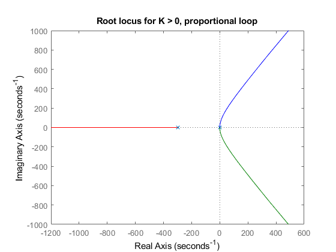 As can be seen from the root locus, the proportional system always has either two poles with positive real part or a pole with zero real part but multiplicity 2. Thus, the system is unstable.
Question 3.5
To get the root locus for K < 0, we plot the root locus of the symmetric of the transfer function
figure(fig_count)
fig_count = fig_count + 1;
rlocus(-g_prop);
title('Root locus for K < 0, proportional loop')
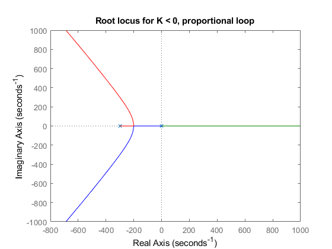 Question 3.7
Now we use the transfer function for a proportional-derivative controller and plot the root locus for different values of z, for K > 0
z_test = [-500, -20, -10, 10, 20, 300, 500]; for i = 1:length(z_test) figure(fig_count) fig_count = fig_count + 1; g_prop_der = (s+z_test(i))/(s^2*(s+300)); rlocus(g_prop_der); title(strcat("Root locus ", "z = ", num2str(z_test(i)))) end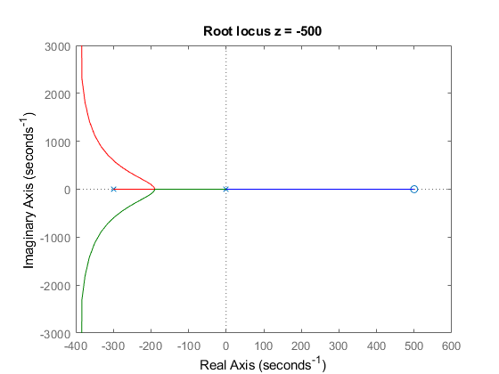 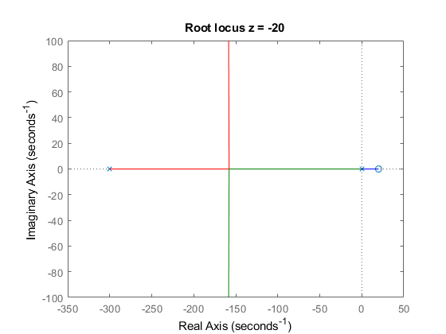 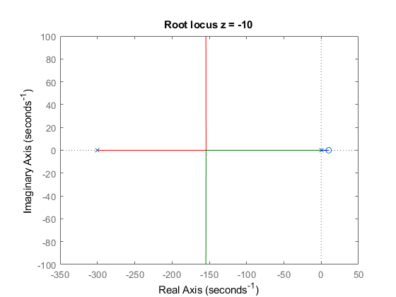 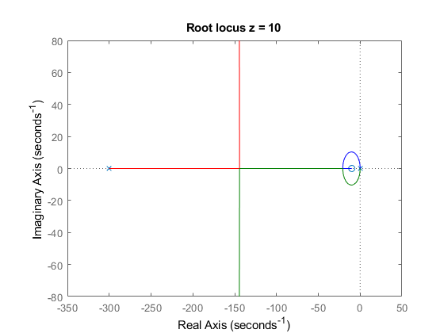 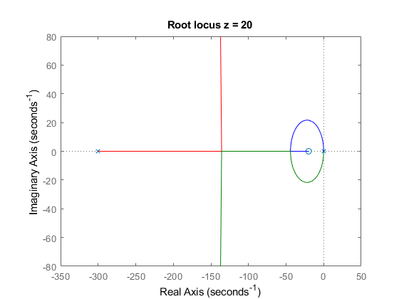 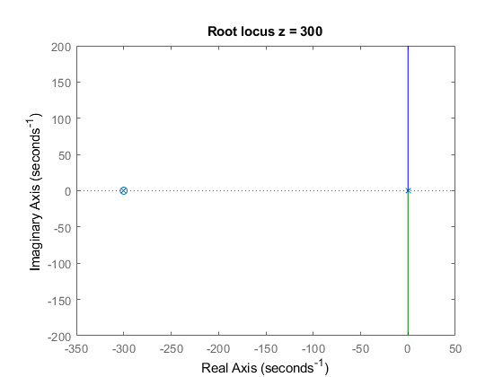 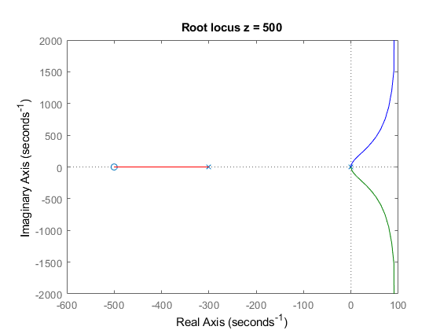
Here are 6 root loci for different values of z. For z < 0, the system is unstable as there is always a pole with positive real part or a double pole with zero real part. For small enough z > 0, the system is stable except for a specific value of K (K=0) that causes a double pole with zero real part. For large z > 0, the system is again unstable.
Question 3.8 - searching the value for K to get double pole in -2.01
% Searches the value for K such that the closed-loop system has a double % pole at s = -2.01 z_procura = 1; % problem parameter polo_procurado = -2.01; g_procura = (s+z_procura)/(s^2*(s+300)); [r_procura,k_procura] = rlocus(g_procura); k_alvo = 0; polo_alvo = 0+0i; % We run the whole root locus vector looking for the double pole at -2.01 for j = 2:length(k_procura) if(abs(r_procura(1,j)-r_procura(2,j))<0.0001) k_alvo = k_procura(j); polo_alvo = r_procura(1,j); break % when we find it, we exit the loop end end % Plotting the root locus for z = 1 and displaying the double pole figure(fig_count) fig_count = fig_count + 1; rlocus(g_procura); hold on plot(real(r_procura(1,j)), imag(r_procura(1,j)), 'r.','MarkerSize', 15); title('Root locus for z = 1, displaying the double pole'); % Calculating Kp and Kd from the K found in the search for the double pole % (-2.01). The K for the pole mentioned is K = 1192. Kd_procura = k_alvo/(600*Kt*omega_0/M); Kp_procura = z_procura * Kd_procura;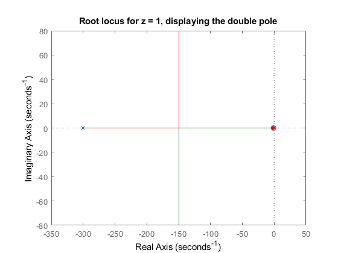
Question 3.8 - running the simulation and plotting the step response
For this set of data, we exemplify the difference in response of the systems analysed.
% Using the gains found in the previous section Kp = Kd_procura; Kd = Kp_procura; % Defining the parameters for the simulation. K_prop = 600*Kp*Kt*omega_0/M; % proportional controller gain K_prop_der = 600*Kd*Kt*omega_0/M; % proportional-derivative controller gain z = Kp/Kd; % the value for this is 1 since we found Kp and Kd to be the same % Running the simulation for the previous data simout_tot = sim('total_lab3','StopTime',num2str(finaltime),'FixedStep',num2str(StepSize)); % Plotting the step response of the closed-loop linear system with the % proportional-derivative controller vs with a simple proportional % controller. figure(fig_count) fig_count = fig_count + 1; plot(simout_tot.get('z_p').time, simout_tot.get('z_p').signals.values); hold on plot(simout_tot.get('z_pd').time, simout_tot.get('z_pd').signals.values); %plot(simout_tot.get('z_pdtf').time, simout_tot.get('z_pdtf').signals.values); xlabel('time (s)') ylabel('z (m)') title({strcat("Altitude ", "dZr = ", num2str(dZr), " m"),... strcat('z = ', num2str(z), ' K_p = ', num2str(Kp), ' K_d = ', num2str(Kd))}) legend('P controller','PD controller','Location','southeast');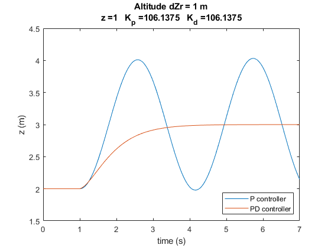
Here we plotted 2 different graphs to compare different controllers.
As indicated in the legend, the blue one originates from a simple proportional controller. As seen, it does not stabilize in the reference value.
The red graph is the step response of a proportional-derivative controller, the simulation for which is done step by step using the script from lab class 2. In the simulink model it is the "proportional derivative" block. This is the answer to question 3.8.
Question 3.9 - effect of a varying z for constant K
We now plot the step response keeping K constant but varying z.
K_39a = 1192;
z_39a = [0.5, 1, 10, 50];
legendcella = {};
for i = 1:length(z_39a)
z = z_39a(i);
Kd = K_39a/(600*Kt*omega_0/M);
Kp = z_39a(i) * Kd;
K_prop = 600*Kp*Kt*omega_0/M;
K_prop_der = 600*Kd*Kt*omega_0/M;
simout_tot = sim('total_lab3','StopTime',num2str(finaltime),'FixedStep',num2str(StepSize));
figure(fig_count)
plot(simout_tot.get('z_pd').time, simout_tot.get('z_pd').signals.values);
hold on
xlabel('time (s)')
ylabel('z (m)')
title(strcat("Altitude ", "dZr = ", num2str(dZr), " m For constant K = 1192"))
legendcella = [legendcella, cellstr(strcat('z = ', num2str(z_39a(i))))];
end
fig_count = fig_count + 1;
legend(legendcella,'Location','Southeast');
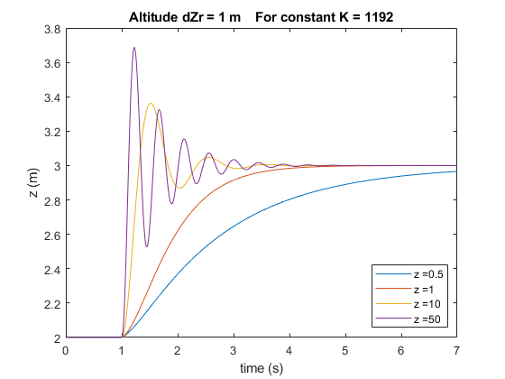 From the obtained plots we conclude that a larger the value of z, incrases the oscillations and overshoot. (this is only true up to a certain value, as we will see in the next plots) For z lower than 1, the time the system takes to settle is greater.
Special case z = 300
z = 300; Kd = K_39a/(600*Kt*omega_0/M); Kp = z * Kd; K_prop = 600*Kp*Kt*omega_0/M; K_prop_der = 600*Kd*Kt*omega_0/M; simout_tot = sim('total_lab3','StopTime',num2str(finaltime),'FixedStep',num2str(StepSize)); figure(fig_count) fig_count = fig_count + 1; plot(simout_tot.get('z_pd').time, simout_tot.get('z_pd').signals.values); hold on xlabel('time (s)') ylabel('z (m)') title(strcat("Altitude ", "dZr = ", num2str(dZr), " m For constant K = 1192")) legend(strcat("z = ",num2str(z)));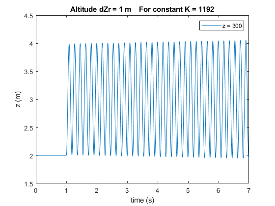
For z close to 300, the system doesn't converge to the target (the amplitude of the oscilations remains approximately the same). This confirms our expectation, drawn from the root-locus for z = 300 (in figure 20). In said root-locus, we find two poles whose real part is 0. This, together with the absense of poles in the right complex semiplane leads us to conclude that the system is marginally stable -> the step response doesnt converge nor diverge.
Special case z = 150
z = 150; Kd = K_39a/(600*Kt*omega_0/M); Kp = z * Kd; K_prop = 600*Kp*Kt*omega_0/M; K_prop_der = 600*Kd*Kt*omega_0/M; simout_tot = sim('total_lab3','StopTime',num2str(finaltime),'FixedStep',num2str(StepSize)); figure(fig_count) fig_count = fig_count + 1; plot(simout_tot.get('z_pd').time, simout_tot.get('z_pd').signals.values); hold on xlabel('time (s)') ylabel('z (m)') title(strcat("Altitude ", "dZr = ", num2str(dZr), " m For constant K = 1192")) legend(strcat("z = ",num2str(z)));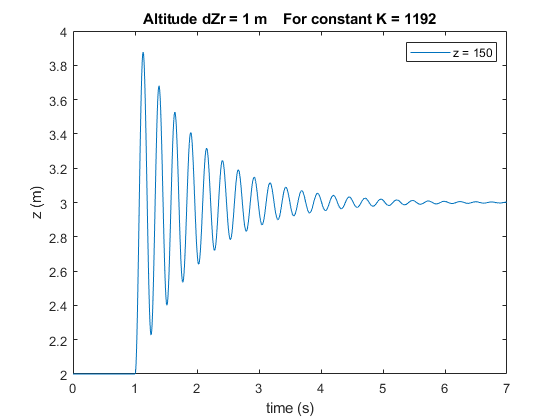
Here we plot the step response for z = 150. Here we can see that for a large enough value of z (up to z = 300), the time it takes for the system to converge is greater the the time for z = 1, for example.
Special case z = 500
z = 500; Kd = K_39a/(600*Kt*omega_0/M); Kp = z * Kd; K_prop = 600*Kp*Kt*omega_0/M; K_prop_der = 600*Kd*Kt*omega_0/M; simout_tot = sim('total_lab3','StopTime',num2str(finaltime),'FixedStep',num2str(StepSize)); figure(fig_count) fig_count = fig_count + 1; plot(simout_tot.get('z_pd').time, simout_tot.get('z_pd').signals.values); hold on xlabel('time (s)') ylabel('z (m)') title(strcat("Altitude ", "dZr = ", num2str(dZr), " m For constant K = 1192")) legend(strcat("z = ",num2str(z)));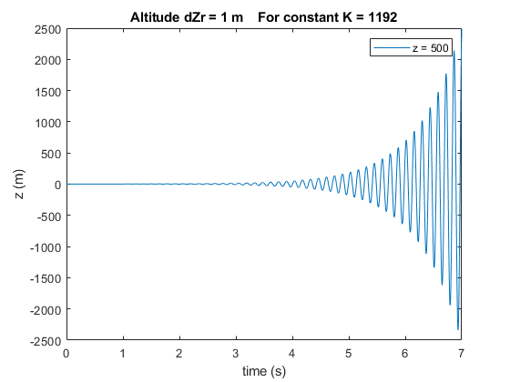
For z higher than 300, the system diverges (for example z = 500). This can be expalined by looking at the root locus for z=500 (figure 21). Here, we can see that for k different than 0 there are two poles in the right complex semiplane. We can thus conclude that the system is unstable, as this step response proves.
Question 3.9 - effect of a varying K for constant z
We now plot the step response keeping z constant but varying K.
finaltime = 10;
K_39b = [150, 500, 1192, 3000];
z_39b = 1;
legendcellb = {};
for i = 1:length(K_39b)
z = z_39b;
Kd = K_39b(i)/(600*Kt*omega_0/M);
Kp = z_39b * Kd;
K_prop = 600*Kp*Kt*omega_0/M;
K_prop_der = 600*Kd*Kt*omega_0/M;
simout_tot = sim('total_lab3','StopTime',num2str(finaltime),'FixedStep',num2str(StepSize));
figure(fig_count)
plot(simout_tot.get('z_pd').time, simout_tot.get('z_pd').signals.values);
hold on
xlabel('time (s)')
ylabel('z (m)')
title(strcat("Altitude ", "dZr = ", num2str(dZr), " m For constant z = 1"))
legendcellb = [legendcellb, cellstr(strcat('K = ', num2str(K_39b(i))))];
end
legend(legendcellb,'Location','southeast');
fig_count = fig_count + 1;
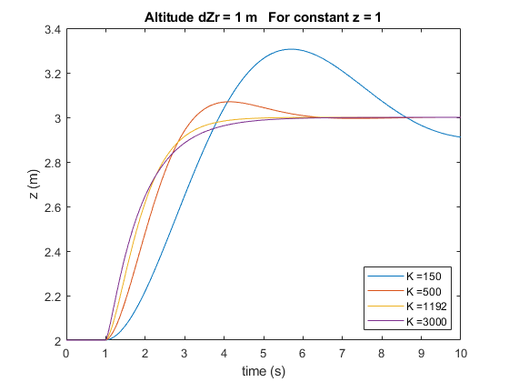 From these plots we conclude that increasing K not only makes the response faster but also reduces the overshoot.